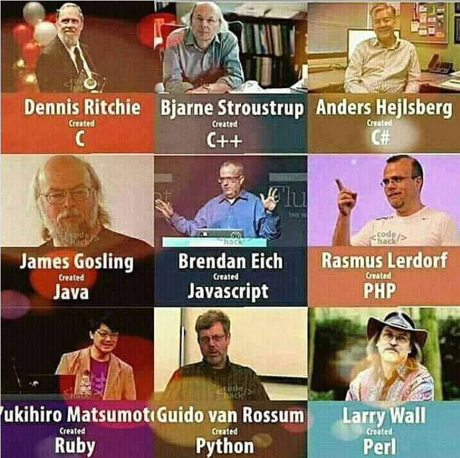

Java logо
Java karakteristike:
- Jednostavnost
- Objektna orijentisanost
- Platformna nezavisnost
- Sigurnost
- Robustnost
- Arhitekturna neutralnost
- Prenosivost
- Dinamičnost
- Interpretiranost
- Visoke performanse
- Višenitnost (Multithread)
- Distribuiranost
Tabela 1: java operatori
| Tip operatora |
Operator |
Opis |
| Aritmeticki operatori |
++ |
Inkrementiranje (unarni operator) |
| -- |
Dekrementiranje (unarni operator) |
| + |
Sabiranje |
| - |
Oduzimanje |
| * |
Množenje |
| / |
Deljenje |
| % |
deljenje po modulu |
| Operatori poredjenja |
== |
Jednakost |
| != |
Nejednakost |
| < |
Manje od |
| > |
Veće od |
| <= |
Manje ili jednako |
| >= |
Veće ili jednako |
| Logicki operatori |
&& |
Logicko I |
| || |
Logicko ukljucujuce ILI |
| ^ |
Logicko iskljucujuce ILI |
| ! |
Negacija |
| Operatori za rad sa bitovima |
& |
Bitsko I |
| | |
Bitsko ILI |
| ^ |
Bitno iskljucujuce ILI |
| << |
Pomeranje bitova u lijevu stranu |
| >> |
Pomeranje bitova u desnu stranu |
| >>> |
Pomeranje bitova u desnu stranu kao da nema znaka |

Slika 1: Autori programskih jezeka